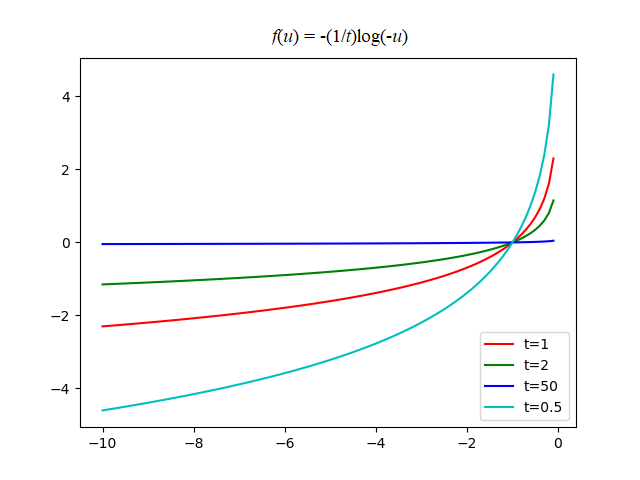

3. 优化问题求解(2)
对于不含有不等式约束的优化问题，可以先将不等式约束问题转化为等式约束问题再求解。
3.1. 内点法
用内点法求解含有不等式约束的凸优化问题，就是用Newton方法求解一系列等式约束问题，或者求解一系列KKT条件的修改形式。
3.1.1. 障碍法
尝试将不等式约束问题转化为等式约束问题，从而使用Newton方法求解。即，原问题
可以转化为，
其中\(I_{-}(u)\)是指示性函数，
这样，我们就可以转化为等式约束的优化问题，但\(I_{-}(u)\)不可微，因此不能使用需要梯度的下降方法。
对数障碍
指示函数不可微，可以使用一个近似的可微函数来代替：

观察函数图像，可以发现对数障碍函数是非减函数，且当\(u>0\)时函数取值为\(\infty\)。因此，定义对数障碍函数为,
对数障碍函数的梯度和Hessian矩阵为，
用\(\hat{I}_{-}\)替换\(I_{-}\)可得到以下近似，
由于\(-(1/t)\log(-u)\)是\(u\)的单增凸函数，上式上的目标函数是可微凸函数。假定恰当的闭性条件成立，则可以用Newton方法来求解。上式等价于以下问题，
Central Path
针对不同的\(t>0\)值，我们定义\(\mathbf{x}^*(t)\)为相应优化问题的解，那么，Central path就是指所有点\(\mathbf{x}^*(t),t>0\)的集合，其中的点被称为central points。所有中心路径上的点由以下充要条件所界定：\(\mathbf{x}^*(t)\)是严格可行的，即满足，
并且存在\(\hat{\nu}\in\mathbb{R}^p\)使得（中心路径条件）
成立。
中心路径条件的KKT条件解释。点\(x\)等于\(\mathbf{x}^*(t)\)的充要条件是存在\(\lambda,\nu\)满足
KKT条件和中心条件的唯一不同在于\(\lambda_if_i(\mathbf{x})=0\)被条件\(-\lambda_if_i(\mathbf{x})=1/t\)所替换。从上式可以导出中心路径的一个重要性质：每次个中心点产生对偶可行解，因而给出最优值\(\mathbf{p}^*\)的一个下界。
解释：先定义
，那么\(\lambda^*(t)\)和\(\nu^*(t)\)是对偶可行解。原式可以表示成，
可以看出，\(\mathbf{x}^*(t)\)使\(\lambda=\lambda^*(t),\nu=\nu^*(t)\)时的Lagrange函数，
达到最小，这意味着和\(\nu^*(t)\)是对偶可行解。因此，对偶函数是有限的，并且，
这表明\(\mathbf{x}^*(t)\)和对偶可行解\(\lambda^*(t),\nu^*(t)\)之间的对偶间隙就是\(m/t\)。作为一个重要的结果，我们有，
即\(\mathbf{x}^*(t)\)是和最优值偏差在\(m/t\)之内的次优解。也证实了\(\mathbf{x}^*(t)\)随着\(t\rightarrow \infty\)而收敛于最优解。
障碍函数方法
算法：障碍法 |
|---|
|
Newton步径\(\Delta \mathbf{x}_{nt}\)以及相关的对偶变量由以下线性方程确定，
3.1.2. 原对偶内点法
原对偶内点法和障碍方法非常相似，但也有一些差别。
仅有一层迭代，没有障碍方法的内部迭代和外部迭代的区分。每次迭代时同时更新原对偶变量。
通过将Newton方法应用于修改的KKT方程（即对障碍中心点问题的最优性条件）确定原对偶内点法的搜索方向。原对偶搜索方向和障碍方法导出的搜索方向相似，但不完全相同。
在原对偶内点法中，原对偶迭代值不需要是可行的。
原对偶方法经常比障碍方法有效，特别是高精度场合，因为它们可以展现超线性收敛性质。原对偶内点法相对于障碍方法所具有的另一个优点是，它们可以有效处理可行但不严格可行的问题。
3.1.2.1. 原对偶搜索方向
如同障碍方法，我们从修改KKT条件开始，该条件可以表述为\(r_t(\mathbf{x},\lambda,\nu)=0, t>0\)，其中
此处的\(\mathbf{f}:\mathbb{R}^n\rightarrow\mathbb{R}^m\)和它的导数矩阵\(D\mathbf{f}\)由下式给出，
如果\(\mathbf{x,\lambda,\nu}\)满足\(r_t(\mathbf{x,\lambda,\nu})=0\)（且\(f_i(\mathbf{x})<0)\)，则\(\mathbf{x}=\mathbf{x}^*(t),\lambda=\lambda^*(t),\nu=\nu^*(t)\)。特别地\(\mathbf{x}\)是原可行的，\(\lambda,\nu\)是对偶可行的，对偶间隙为\(m/t\)。
我们将\(r_t\)的成分命名为如下：
对偶残差
原残差
中心残差(修改的互补性条件)
先固定\(t\)，考虑从满足\(\mathbf{f}(\mathbf{x})\prec 0,\lambda \succ0\)的点\((\mathbf{x},\lambda,\nu)\)开始求解非线性方程\(r_t(\mathbf{x},\lambda,\nu)=0\)的Newton步径。将当前点和Newton步径分别记为，
\[ \mathbf{y}=(\mathbf{x},\lambda,\nu),\quad \Delta \mathbf{y}=(\Delta \mathbf{x},\Delta\lambda,\Delta \nu) \]决定Newton步径的线性方程为，
\[ r_t(\mathbf{y}+\Delta \mathbf{y})\approx r_t(\mathbf{y})+Dr_t(\mathbf{y})\Delta \mathbf{y}=0 \]即，\(\Delta \mathbf{y}=-Dr_t(\mathbf{y})^{-1}r_t(\mathbf{y})\)。于是我们有，
\[\begin{split} \begin{bmatrix} \nabla^2 f_0(\mathbf{x})+\sum_{i=1}^m\lambda_i\nabla^2f_i(\mathbf{x})&D\mathbf{f}(\mathbf{x})^\top&\mathbf{A}^\top\\ -\mathbf{diag}(\lambda)D\mathbf{f}(\mathbf{x})&-\mathbf{diag}(\mathbf{f}(\mathbf{x}))&0\\ \mathbf{A}&0&0 \end{bmatrix} \begin{bmatrix} \Delta \mathbf{x}\\ \Delta\lambda\\ \Delta\nu \end{bmatrix} =-\begin{bmatrix} r_{dual}\\r_{cent}\\r_{pri} \end{bmatrix} \end{split}\]所谓原对偶搜索方向\(\Delta y_{pd}=(\Delta x_{pd},\Delta\lambda_{pd},\Delta\nu_{pd})\)就是上式的解。
3.1.2.2. 代理对偶间隙
在原-对偶内点法中，迭代点\(\mathbf{x}_k,\lambda_k,\nu_k\)不一定是可行解(not necessarity feasitble),除了在算法收敛的极限情况。这意味着我们不能方便的在每个步骤\(k\)计算对偶间隙\(\eta_k\)。因此，可以定义一个代理对偶间隙(surrogate duality gap)如下，
该代理间隙有可能成为对偶间隙，当\(\mathbf{x}\)是原问题可行且\(\lambda,\nu\)是对偶可行时（即，\(r_{\mathrm{pri}}=0 \wedge r_{\mathrm{dual}}=0\)）。注意：参数\(t\)对应的代理间隙为\(\hat{\eta}=m/\hat{\eta}\).
原-对偶方法
算法：原-对偶方法
1. 给定满足\(f_1(\mathbf{x})<0,\cdots f_m(\mathbf{x})<0，\lambda\succ 0, \mu>1\)，误差阈值\(\epsilon_{\mathrm{feas}}>0, \epsilon>0。\)
2. 重复进行
2.1 设置\(t\)。\(t:= \mu m/\hat{\eta}.\)
2.2 计算原-对偶方法\(\Delta\mathbf{y}_{pd}\)
2.3 线性搜索并更新。求得步长\(s>0\)，并设置\(\mathbf{y}=\mathbf{y}+s\Delta\mathbf{y}_{\mathrm{pd}}\)
3 until (\(\lVert r_{\mathrm{pri}}\rVert_2\le \epsilon_{\mathrm{feas}}, \lVert r_{\mathrm{dual}}\rVert_2\le \epsilon_{\mathrm{feas}}\) and \(\hat{\eta}\le\epsilon\)).